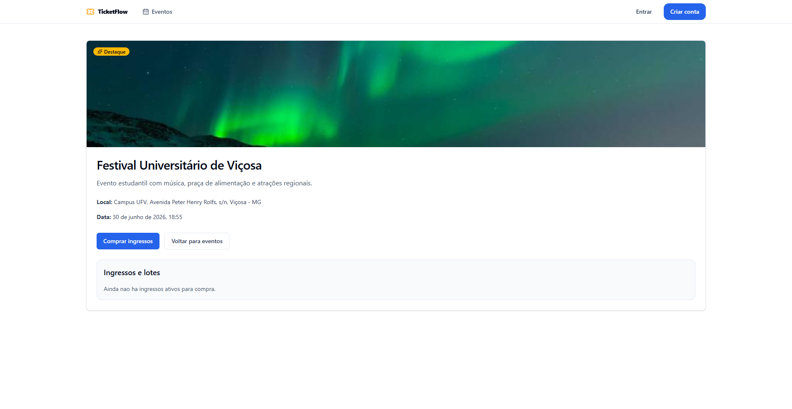
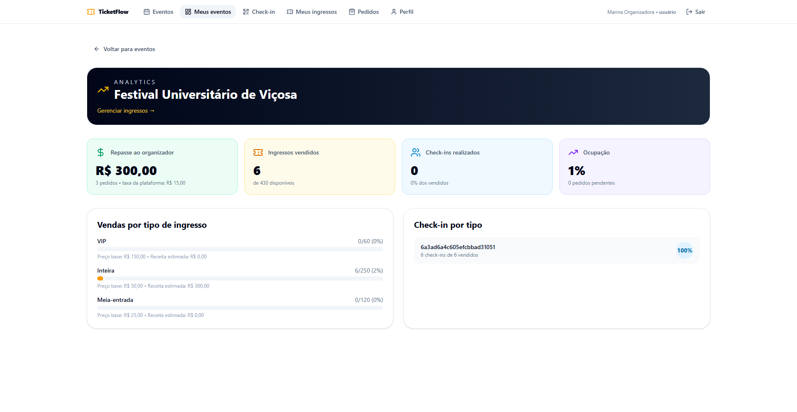
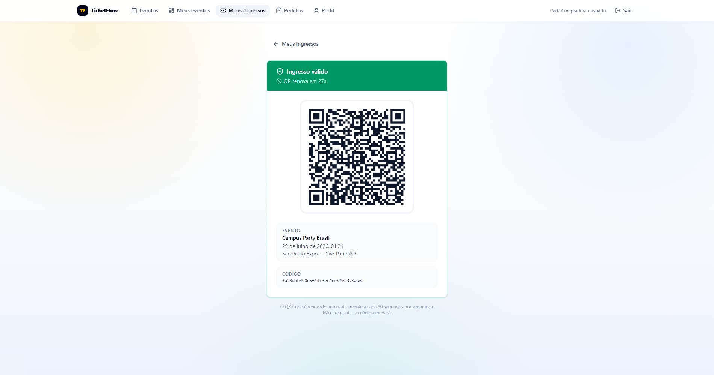
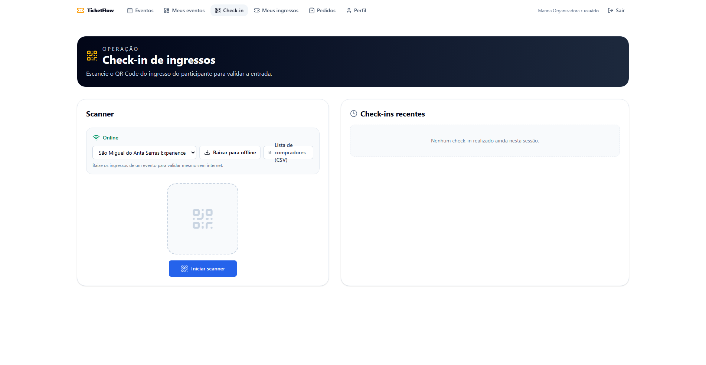
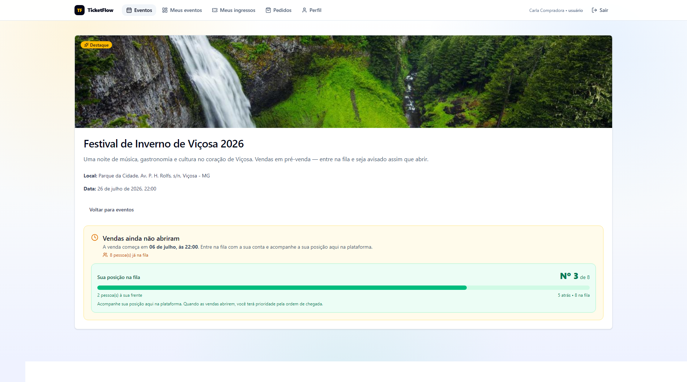
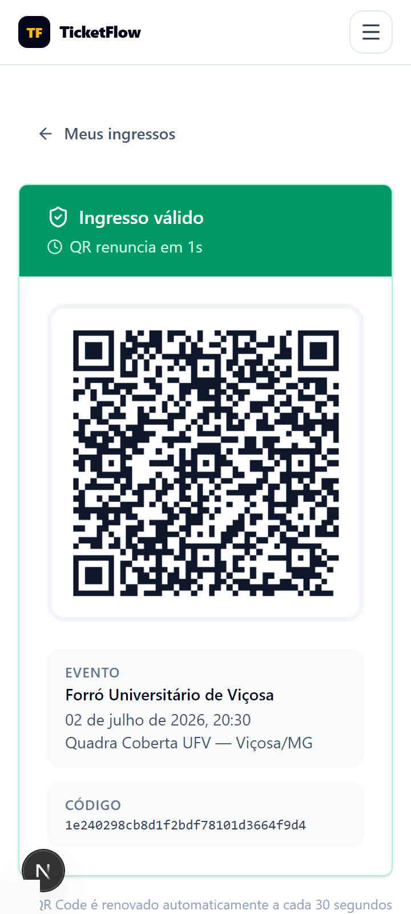

TicketFlow
Plataforma full-stack de venda de ingressos: qualquer pessoa cria eventos, vende com QR Code dinâmico e faz check-in — inclusive offline. Foi o meu Trabalho de Conclusão de Curso. Full-stack ticketing platform: anyone creates events, sells with a dynamic QR Code and runs check-in — even offline. It was my capstone project.
TCC — Análise e Desenvolvimento de Sistemas (UniViçosa). O software do trabalho de conclusão; a monografia foi escrita em LaTeX/ABNT. Capstone — Systems Analysis and Development (UniViçosa). The final-project software; the monograph was written in LaTeX/ABNT.

Visão Geral Overview
O TicketFlow cobre o ciclo inteiro de um ingresso: o organizador cria e publica o evento em minutos, o comprador garante o ingresso com um QR dinâmico e seguro, e a portaria faz o check-in pelo celular — mesmo sem internet. Criar e vender é gratuito; a plataforma monetiza com uma taxa de serviço de 5% e destaque de eventos.
TicketFlow covers a ticket's whole lifecycle: the organizer creates and publishes an event in minutes, the buyer secures the ticket with a secure dynamic QR, and the gate does check-in from a phone — even offline. Creating and selling is free; the platform monetizes with a 5% service fee and event highlights.
Destaques Técnicos Technical Highlights
QR dinâmico (HMAC rotativo) Dynamic QR (rotating HMAC)
Cada ingresso gera um QR assinado com HMAC rotativo — impossível de clonar por print, validado no check-in mesmo offline.
Every ticket generates a QR signed with a rotating HMAC — impossible to clone via screenshot, validated at check-in even offline.
Check-in offline Offline check-in
A portaria valida ingressos sem depender de rede, sincronizando quando a conexão volta — essencial em eventos lotados.
The gate validates tickets without relying on the network, syncing when the connection returns — essential at packed events.
Lotes & fila de espera Batches & waiting list
Lotes programados e pré-venda com fila por ordem de chegada quando o evento esgota.
Scheduled batches and a pre-sale waiting list by arrival order when an event sells out.
Papéis por evento Per-event roles
Qualquer usuário vira organizador e adiciona operadores por evento (check-in e download de compradores), com admin global.
Any user becomes an organizer and adds per-event operators (check-in and buyer export), with a global admin.
Por Dentro do App Inside the App






Qualidade & Arquitetura Quality & Architecture
Domínio organizado em módulos (events, tickets, orders, identity, audit), com a aplicação chegando por Server Actions e Route Handlers. Tipagem strict de ponta a ponta e cobertura de testes unitários (Vitest) e e2e (Playwright), empacotado em Docker multi-stage.
Domain organized into modules (events, tickets, orders, identity, audit), reached via Server Actions and Route Handlers. Strict typing end to end and both unit (Vitest) and e2e (Playwright) test coverage, packaged in a multi-stage Docker image.